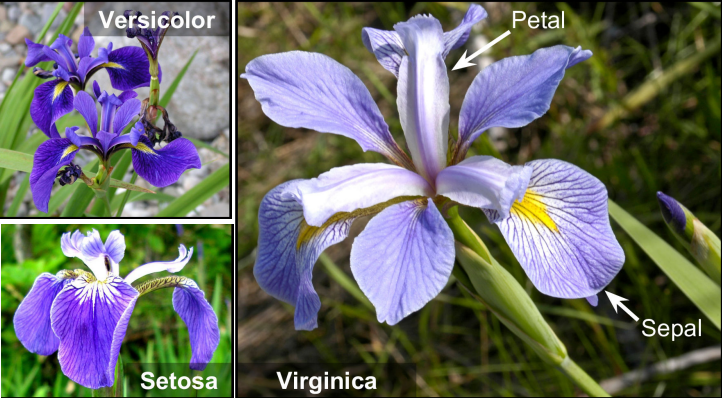

Example: Iris dataset
Xy
In [1]: from sklearn.datasets import load_iris
In [2]: iris = load_iris()
In [3]: iris.target_names
Out[3]: ["setosa", "versicolor", "virginica"]
In [4]: X, y = iris.data, iris.target
In [5]: X.shape
Out[5]: (150, 4)
In [6]: n_instances, n_features = X.shape
In [7]: n_instances
Out[7]: 150
In [8]: n_features
Out[8]: 4
In [9]: y
Out[9]:
array([0, 0, 0, 0, 0, 0, 0, 0, 0, 0, 0, 0, 0, 0, 0, 0, 0, 0, 0, 0, 0, 0,
0, 0, 0, 0, 0, 0, 0, 0, 0, 0, 0, 0, 0, 0, 0, 0, 0, 0, 0, 0, 0, 0,
0, 0, 0, 0, 0, 0, 1, 1, 1, 1, 1, 1, 1, 1, 1, 1, 1, 1, 1, 1, 1, 1,
1, 1, 1, 1, 1, 1, 1, 1, 1, 1, 1, 1, 1, 1, 1, 1, 1, 1, 1, 1, 1, 1,
1, 1, 1, 1, 1, 1, 1, 1, 1, 1, 1, 1, 2, 2, 2, 2, 2, 2, 2, 2, 2, 2,
2, 2, 2, 2, 2, 2, 2, 2, 2, 2, 2, 2, 2, 2, 2, 2, 2, 2, 2, 2, 2, 2,
2, 2, 2, 2, 2, 2, 2, 2, 2, 2, 2, 2, 2, 2, 2, 2, 2, 2])
In [10]: iris.feature_names
Out[10]:
['sepal length (cm)',
'sepal width (cm)',
'petal length (cm)',
'petal width (cm)']
In [11]: X[:3]
Out[11]:
array([[5.1, 3.5, 1.4, 0.2],
[4.9, 3. , 1.4, 0.2],
[4.7, 3.2, 1.3, 0.2]])
There are many different kinds of performance metrics.
Accuracy, precision, recall, to name a few.
Accuracy is particularly convenient because it is easy to understand and often applicable.
$$\text{accuracy} = \frac{\text{\# correctly predicted instances}}{\text{\# instances}}$$
For example, it's awkward to use precision or recall when classifying, say, three iris flowers.
$\;\texttt{04.02.3weak1strong.ipynb}$
$51\%$ Head, $49\%$ Tail
\[\begin{aligned} P(\text{\# Head} > \text{\# Tail}, \; 1000\;\text{tosses}) &\approx 75\% \\ P(\text{\# Head} > \text{\# Tail}, \; 10000\;\text{tosses}) &\approx 97\% \end{aligned}\]
$\;\texttt{04.05.coin\_toss\_monte\_carlo.ipynb}$
\[\newcommand{\nchoosek}[2]{\begin{pmatrix}#1\\#2\end{pmatrix}} \begin{aligned} P(\text{\# Head} > \text{\# Tail}, \; n\;\text{tosses}) \\ = \sum_{k=\lfloor \frac{n}{2} \rfloor + 1}^{n} \nchoosek{n}{k} p^{k} (1-p)^{n-k} \\ \end{aligned}\]
When $p = 0.5$, we have
\[\newcommand{\nchoosek}[2]{\begin{pmatrix}#1\\#2\end{pmatrix}} P(\text{\# Head} > \text{\# Tail}, \; n\;\text{tosses}) \\ = \begin{cases} \frac{1}{2} &\text{if $n$ is odd} \\ \frac{1-\varepsilon}{2} &\text{if $n$ is even} \end{cases} \] where $\;\varepsilon = \begin{pmatrix}n \\ \lfloor \frac{n}{2} \rfloor\end{pmatrix} (\frac{1}{2})^{n}\,.$
Let's go back to the case $p=0.51\;.$
At least we kind of see that
I still don't see how this could become $97\%$
Consider the famous Dog/Cat binary classification
| instance 1 | instance 2 | instance 3 | |
|---|---|---|---|
| estimator 1 | Dog | Cat | Cat |
| estimator 2 | Dog | Dog | Cat |
| estimator 3 | Cat | Cat | Dog |
| decision | Dog | Cat | Cat |
| ground truth | Dog | Cat | Dog |
| instance 1 | instance 2 | instance 3 | |
|---|---|---|---|
| estimator 1 | 0.87 (Dog) | 0.30 (Cat) | 0.47 (Cat) |
| estimator 2 | 0.90 (Dog) | 0.51 (Dog) | 0.48 (Cat) |
| estimator 3 | 0.93 (Dog) | 0.12 (Cat) | 0.58 (Dog) |
| average | 0.90 (Dog) | 0.31 (Cat) | 0.51 (Dog) |
| ground truth | Dog | Cat | Dog |
$\;\texttt{04.16.agerons\_example.ipynb}$
i.e. sampling w/ or w/o replacement
Statisticians call sampling w/ replacement bootstrap.
Same sample appears more than once in training set?
Wouldn't they be overly represented?
sklearnImplementation
"Yes, just let them appear more than once."
The source code in, e.g.
~/miniconda3/envs/ensemble_learning/lib/python3.10/site-packages/sklearn/ensemble/_bagging.py
def _generate_indices(random_state, bootstrap, n_population, n_samples):
"""Draw randomly sampled indices."""
# Draw sample indices
if bootstrap:
indices = random_state.randint(0, n_population, n_samples)
else:
indices = sample_without_replacement(
n_population, n_samples, random_state=random_state
)
return indices
# Draw samples, using sample weights, and then fit
if support_sample_weight:
if sample_weight is None:
curr_sample_weight = np.ones((n_samples,))
else:
curr_sample_weight = sample_weight.copy()
if bootstrap:
sample_counts = np.bincount(indices, minlength=n_samples)
curr_sample_weight *= sample_counts
else:
not_indices_mask = ~indices_to_mask(indices, n_samples)
curr_sample_weight[not_indices_mask] = 0
estimator_fit(X[:, features], y, sample_weight=curr_sample_weight)
else:
estimator_fit(X[indices][:, features], y[indices])
BaggingClassifierfrom
sklearn
class BaggingClassifier(ClassifierMixin, BaseBagging):
def __init__(
self,
base_estimator=None,
n_estimators=10,
*,
max_samples=1.0,
max_features=1.0,
bootstrap=True,
bootstrap_features=False,
oob_score=False,
warm_start=False,
n_jobs=None,
random_state=None,
verbose=0,
):
"Only about $63\%$ of the training instances are sampled on average"
$63\%$? Where does this number come from?
The quote about $63\%$ seems a bit unclear.
If we spend time thinking about it, sampling involves two numbers
Obviously the oob ratio will depend on the sampling size $k$. So a plausible answer for the origin of $63\%$ is $$k = m \implies \lim_{m\to \infty} \left(\text{noob ratio}\right) = 63\%$$
In [1]: import numpy as np
In [2]: def get_noob_ratio(m=100, k=100):
...: """
...: noob stands for "Not Out-Of-Bag"
...: """
...: population = np.arange(m)
...: sampled = np.random.choice(population, size=k, replace=True)
...: ratio = len(np.unique(sampled)) / m
...: return ratio
...:
In [3]: get_noob_ratio()
Out[3]: 0.62
In [4]: get_noob_ratio(999_999, 999_999)
Out[4]: 0.6321746321746322
In [5]: 1 - 1/np.e
Out[5]: 0.6321205588285577
Of course there are people curious about this before you on the Internet: https://math.stackexchange.com/questions/489772/probability-of-sampling-with-and-without-replacement
In particular, when $k = m$, we have \[ \lim_{m\to\infty} \left( 1 - \frac{1}{m} \right)^{m} = \frac{1}{\lim_{m\to\infty} \left( 1 + \frac{1}{m} \right)^{m}} = \frac{1}{\;e\;} \approx 37\% \]
These oob instances could, e.g., be used to evaluate model performance w/o having to preserve a special validation set beforehands.
If you think about it, you might realize that what we did before to instances could be equally applied to features!
That is, we could also sample only a subset of the features to train an estimator. And we could also choose to (or not to) bootstrap such a sampling.
class BaggingClassifier(ClassifierMixin, BaseBagging)